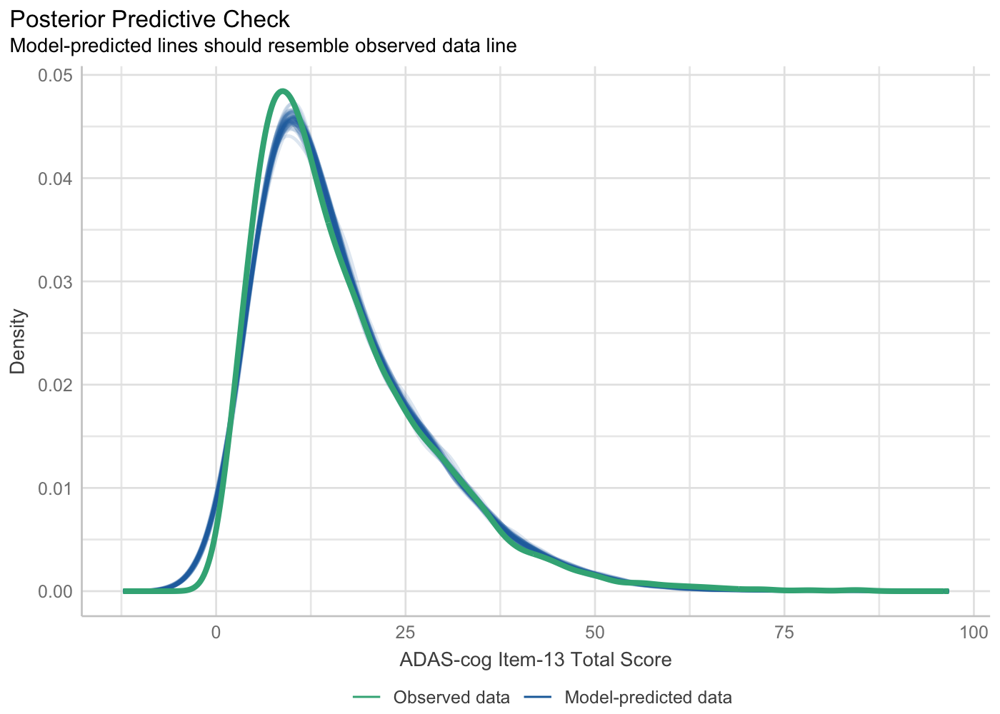
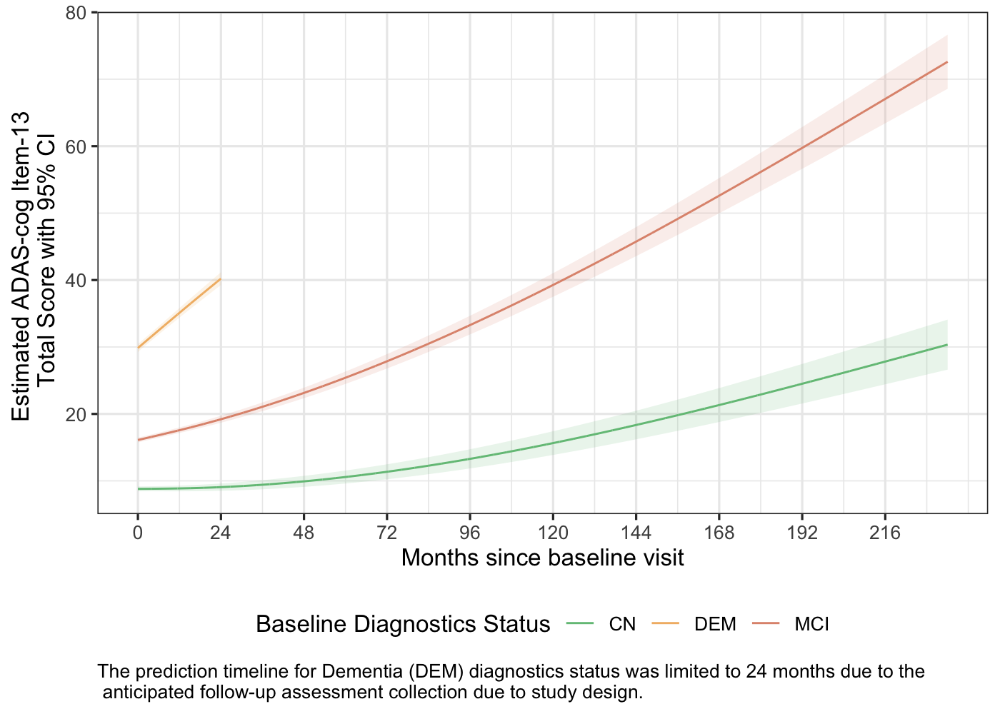

ADNI-Longitudinal
Last Updated: July 25, 2025
Source:vignettes/ADNI-Longitudinal.Rmd
ADNI-Longitudinal.RmdIntroduction
This article demonstrate how to use the ADNIMERGE2 R
package to generate simple longitudinal summaries of clinical cognitive
outcomes. The analysis results that are presented in this article are
merely for illustration purpose.
Load Required R Packages
ADNI Longitudinal Summaries - Clinical Cognitive Outcomes
ADAS-Cog Item-13 Total Score
The following r chucks are used to summarize the ADAS-Cognitive Behavior item-13 total score (ADAS-Cog) over time. Individual’s score trajectory by corresponding baseline diagnostics status, summary result of a hierarchical model fit, and predicted scores overtime by baseline diagnosis status are presented in this section.
Data Preparation
The analysis will based on enrolled subjects in the ADNI study with known baseline diagnostics summary and that have at least one assessment score. The analysis population is summarized in the following diagram.
# Prepare analysis dataset of ADAS-cog item-13 score
ADADAS <- ADQS %>%
# Enrolled participant
filter(ENRLFL %in% "Y") %>%
# ADAS-cog item-13 total score
filter(PARAMCD %in% "ADASTT13") %>%
# Compute time variable in month
mutate(TIME = convert_number_days(AVISITN, bin = month_bin)) %>%
# visit date data imputation from registry
# filter(is.na(TIME), !is.na(DX), !is.na(AVAL))
# For spline term in the model
filter(!if_any(all_of(c("TIME", "DX", "AVAL")), ~ is.na(.x)))Individual Profile Plot
The individual profile of ADAS-Cog item-13 total score over time by baseline diagnostics group is presented below.
# Individual profile (spaghetti) plot
individual_profile_plot <- ADADAS %>%
ggplot(aes(x = TIME, y = AVAL, group = USUBJID, color = DX)) +
geom_line(alpha = 0.75) +
scale_x_continuous(breaks = seq(0, max(ADADAS$TIME, na.rm = TRUE), year2)) +
scale_color_manual(values = dx_color_pal) +
labs(
y = "ADAS-cog Item-13 Total Score",
x = "Months since baseline visit",
color = "Baseline Diagnostics Status",
caption = paste0(
"Based on known baseline diagnostics status ",
"(i.e., any missing diagnostics status is excluded)"
),
plot.caption = element_text(hjust = 0)
) +
theme(legend.position = "bottom")
individual_profile_plotModel Fit
A linear mixed model with spline term of continuous time variable can
be used to analysis the longitudinal ADAS-Cog score using
lme4 R package.
The following terms are included in the mixed effect model:
Main effect of baseline diagnostics status (
DX): To account any baseline difference of ADAS-cog item-13 total score among diagnostics status. In a clinical trial study, it is often to assume the same subject characteristics between treatment group at baseline visit which is a strong assumption. Unlike a clinical trial study, subject characteristics might be different at baseline visit in an observation study. Thus, this term is included here due to the design of ADNI study which is an observational study.Interaction term between time and baseline diagnostics status (
TIME:DX): To account for any difference of the ADAS-cog assessment item-13 total score among diagnostics status overtime.Random intercept and random slope terms (
TIME|USUBJID): To account the repeated measurements per subject. It seems subjects have different baseline ADAS-cog item-13 total score as shown in the above individual profile plot (random intercept:|USUBJID) and subject might also have different trajectory overtime (TIME|).Spline terms (
ns): To considered any non-linear progression trajectory in the model (i.e., non-linear effect of time in the model).
# Spline term defined in the global environment
ns21 <- function(t) {
as.numeric(predict(splines::ns(ADADAS$TIME,
df = 2,
Boundary.knots = c(0, max(ADADAS$TIME))
), t)[, 1])
}
ns22 <- function(t) {
as.numeric(predict(splines::ns(ADADAS$TIME,
df = 2,
Boundary.knots = c(0, max(ADADAS$TIME))
), t)[, 2])
}
assign("ns21", ns21, envir = .GlobalEnv)
assign("ns22", ns22, envir = .GlobalEnv)
# Fit linear mixed effect model using spline terms to account
# non-linear trend of time effect
# With a random slope term ----
lmer_mod_fit <- lme4::lmer(
formula = AVAL ~ DX + I(ns21(TIME)) + I(ns22(TIME)) +
(I(ns21(TIME)) + I(ns22(TIME))):DX + (TIME | USUBJID),
data = ADADAS,
control = lmerControl(optimizer = "Nelder_Mead")
)
#> Warning in checkConv(attr(opt, "derivs"), opt$par, ctrl = control$checkConv, : Model is nearly unidentifiable: very large eigenvalue
#> - Rescale variables?
lmer_mod_fit
#> Linear mixed model fit by REML ['lmerMod']
#> Formula: AVAL ~ DX + I(ns21(TIME)) + I(ns22(TIME)) + (I(ns21(TIME)) +
#> I(ns22(TIME))):DX + (TIME | USUBJID)
#> Data: ADADAS
#> REML criterion at convergence: 72928.55
#> Random effects:
#> Groups Name Std.Dev. Corr
#> USUBJID (Intercept) 5.5581
#> TIME 0.1763 0.51
#> Residual 3.3815
#> Number of obs: 11922, groups: USUBJID, 2810
#> Fixed Effects:
#> (Intercept) DXMCI DXDEM
#> 8.806 7.298 21.044
#> I(ns21(TIME)) I(ns22(TIME)) DXMCI:I(ns21(TIME))
#> 11.435 21.456 28.298
#> DXDEM:I(ns21(TIME)) DXMCI:I(ns22(TIME)) DXDEM:I(ns22(TIME))
#> 69.289 32.062 48.478
#> optimizer (Nelder_Mead) convergence code: 0 (OK) ; 0 optimizer warnings; 1 lme4 warnings-
Model Assumption Check:
performance::check_modelfunction could be used to generate model assumption check (i.e., model diagnostic) plots.
library(performance)
# To relabel x-axis and getting ggplot2 object, set panel = FALSE
model_check <- performance::check_model(
x = lmer_mod_fit,
check = "pp_check",
panel = FALSE
)
model_check <- plot(model_check)
model_check$PP_CHECK +
labs(x = "ADAS-cog Item-13 Total Score")
Population-Level Model Prediction
NOTE:
- The prediction timeline for Dementia (DEM) diagnostics status was limited to 24 monthsdue to the anticipated follow-up collection of ADAS cognitive behaviour assessmentwhich is up-to 2 years due to the study design. However, ADAS-cog assessment might have been collected for rollover subjects with DEM baseline diagnostics status during their initial visit.
# Population level prediction
pred_value <- marginaleffects::predictions(
model = lmer_mod_fit,
conf_level = 0.95,
re.form = NA,
newdata = expand_grid(
TIME = seq(0, max(ADADAS$TIME), by = 0.03),
DX = levels(ADSL$DX),
USUBJID = NA
) %>%
filter(!(DX %in% "DEM" & TIME > year2))
)
predicted_plot <- pred_value %>%
ggplot(aes(x = TIME, y = estimate, color = DX)) +
geom_line() +
geom_ribbon(
aes(ymin = conf.low, ymax = conf.high, fill = DX),
alpha = 0.15, linetype = 0, show.legend = FALSE
) +
scale_x_continuous(breaks = seq(0, max(pred_value$TIME, na.rm = TRUE), year2)) +
scale_fill_manual(values = dx_color_pal) +
scale_color_manual(values = dx_color_pal) +
labs(
x = "Months since baseline visit",
y = "Estimated ADAS-cog Item-13 \n Total Score with 95% CI",
color = "Baseline Diagnostics Status",
fill = NULL,
caption = paste0(
"The prediction timeline for Dementia (DEM) diagnostics status was limited",
" to 24 months due to the\n anticipated follow-up assessment collection",
" due to study design."
)
) +
theme(
legend.position = "bottom",
plot.caption = element_text(hjust = 0)
)
predicted_plot